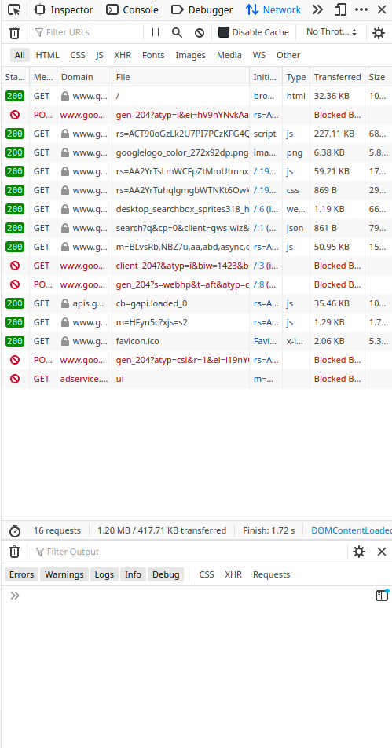

How the Internet Works
Khinshan Khan
@kkhan01
How the Internet Works
Pfft I know how the internet works, why bother?
Lower Level Understanding
Understanding the internet at a bit of a lower level and recognizing all websites can actually be reduced to the same steps helps us understand more complicated things.
The History
The history of the internet (not from Tim Berners Lee time but sure if you want…), helps us understand why and how certain things like docker, digital ocean, and aws came to be.
Meet Bob
Bob is sort of the user we'll follow.
He could be you or I or anyone else. He's just a person accessing the internet to view webpages.
Meet Company XYZ
Company XYZ is more or less a placeholder for a random company that has a website.
We'll look at what they have to do to host their website so Bob can interact with it.
Common Companies I'll Use
I'll probably make them Google often because https://www.google.com is a site we're familiar with.
I'll also use a small flower chain or taco cart as other companies.
What Happens when we Visit a Website?
Steps:
- Open your device (pc/ laptop/ mobile).
- Open a web browser (firefox, google chrome, etc).
- Enter the URL.
Visit a Website
Let's say we navigate to google.com.

How does our Browser Know?
Our browser somehow automagically figured out the logo and search bar and everything else.
But we don't have any of that data saved on our computer, so how did it figure out where the stuff is located and how it should look?
Requests requests requests!
For now, we'll focus on GET requests, but they're just easier to talk about.
Status Codes

Status Codes Explained
The codes are in hundreds. You're probably already familiar with some like 404 for a page not found.
- 1xx: Informational
- 2xx: Success
- 3xx: Redirection
- 4xx: Client Error
- 5xx: Server Error
The google.com Requests
